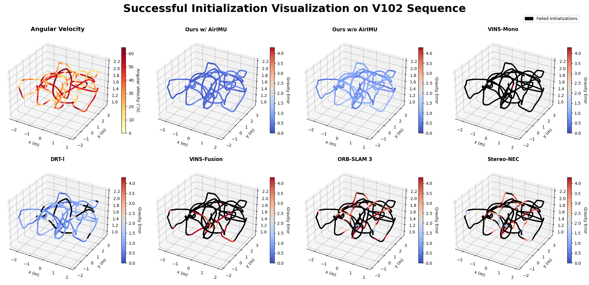
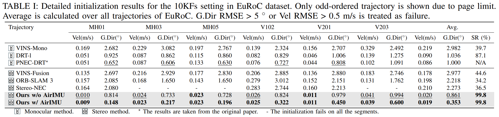
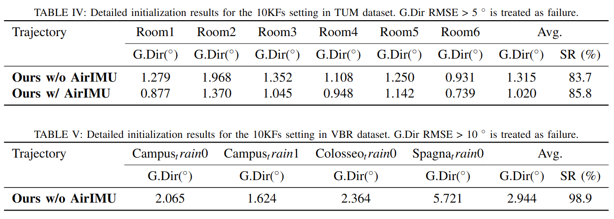
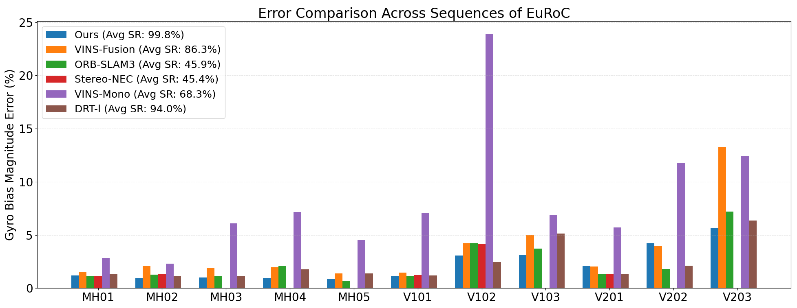

MAC-VI-Init: Robust Visual-Inertial Initialization and Calibration with Learning-based Features and Uncertainty
Overview
This paper presents MAC-VI-Init, a robust and accurate method for VI initialization and online calibration. Traditional approaches often struggle in challenging environments - such as severe illumination changes, dynamic objects, occlusions, and fast motions - due to their reliance on geometric visual features. Our method leverages learning-based feature matching and metrics-aware covariance to robustly estimate visual poses. Moreover, we explicitly compute the covariance of these visual poses to enable more effective joint VI optimization. A learning-based IMU model, AirIMU, can further be incorporated to provide precise IMU corrections and reliable uncertainty estimates for IMU pre-integration. Experiments in challenging scenarios demonstrate that our approach substantially improves the robustness and accuracy compared with existing methods.
Video Demos
These videos illustrate the gravity-direction initialization results (Orange: estimated gravity; Green: ground truth) across different environments. Subsequent localization and mapping are carried out by jointly optimizing the visual pose graph (PGO) together with either standard IMU residuals or those from AirIMU. When AirIMU is used, the localization and mapping system effectively becomes MACVIO, a learning-based stereo visual-inertial odometry that we are also developing.
Lunar Environment (TartanairV2 Dataset)
VBR Colosseo Train 0 (Extreme Exposure)
VBR Colosseo Train 0 (Dynamic Scene)
EuRoC V102
EuRoC V203
Successful Initialization Comparison on V102 Sequence of EuRoC Dataset
Performance Comparison on EuRoC Dataset
Performance of the proposed MAC-VI-Init on TUM and VBR Dataset
Gyroscope Bias Estimation Comparison on EuRoC Dataset
Pose Covariance Analysis on TartanAir Dataset
Xiang Fei
Master of Science in Robotics (MSR)
My current research interests include Robotics, SLAM, and Deep Learning.